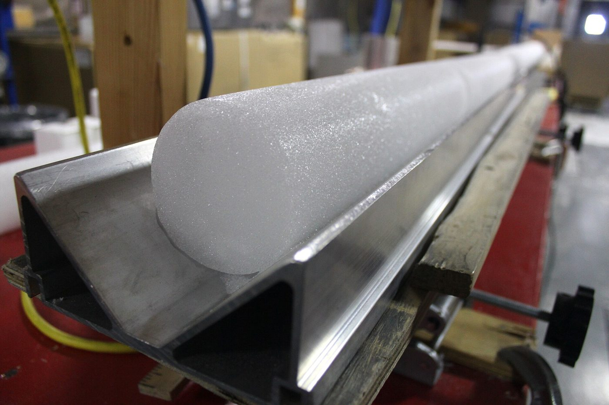

The Renland South core reached bedrock at 3,405 metres in December 2011, at the end of a season that had already lost nine days to weather. What came up the borehole was cut into sixteen-metre runs, logged, and flown out in insulated crates. What it contains is a little over sixty-eight thousand years of snowfall, compressed by its own weight into a column about as wide as a dinner plate.

Reading a core means assigning an age to a depth, and there are several ways to do it. The one everybody prefers, where it is available, is simply to count. Snow that falls in summer differs from snow that falls in winter — in crystal size, in dust content, in the chemistry it scavenges out of the air — and those differences survive burial. Under polarised light, against a dark background, a technician can see them.
Counting is done twice. Two people count the same run independently and reconcile afterwards. Disagreements cluster where melt has blurred a summer, and are recorded rather than averaged away.
Through the upper part of this core a single year occupies roughly twenty-two centimetres of ice. That is generous. It means the annual signal is not something inferred from a smoothed curve but something visible, at a scale a hand can span, and it means the resulting chronology is a count rather than a model.
Where the count stops
Ice does not stay put. Under the weight of everything above it, a layer thins and spreads, and the deeper it goes the thinner it gets. The relationship is close to exponential, which is a polite way of saying that the countable part of a core is a small fraction of its length.
In this core the practical limit falls at about 577 metres, which the layer count puts at roughly 4,200 years before present. Below that the layers are still there. They are simply no longer resolvable by the method, and the chronology has to be handed to something else.
The count does not fail with a bang. It degrades, and somebody has to decide where it stopped being trustworthy.
What takes over is a combination: electrical conductivity, which picks out acid horizons from volcanic fallout; the gas record, which can be matched against other cores; and flow modelling, which is the least direct of the three and the one that carries the most assumption. Each is good. None of them is a count.
The shape of the record below
The isotope curve is where most readers meet a core, and it is worth being clear about what it does and does not say. The ratio of oxygen-18 to oxygen-16 in the ice tracks the temperature at which the snow originally condensed. Colder air holds less of the heavy isotope, so glacial ice is isotopically lighter than interglacial ice, and the deglaciation shows up as a ramp.
Per mil, not per cent. δ¹⁸O is reported in parts per thousand relative to a standard, so a shift of eight units is large.
The thing the plot does not show, and cannot, is that the same vertical distance means wildly different amounts of time at the top and at the bottom. The upper third of the core is thick, young, and well-dated. The lowest two hundred metres are compressed, disturbed by contact with the bed, and in places folded. A centimetre down there is not a unit of anything useful.
What the age model actually claims
The published chronology carries an uncertainty that changes character with depth, and this is the part most often flattened in summary. Above the countable limit the uncertainty is essentially a counting error: it accumulates, it is bounded, and it is honestly small. Below it, the uncertainty is a modelling error, and it does not behave the same way.
Quoting a single figure for the whole core — the way a caption often has to — hides that change. It is not wrong so much as it is two different quantities wearing one label.
None of which makes the deep record unusable. It makes it a different kind of evidence from the shallow record, and worth labelling as such.
Notes and sources
- Layer thicknesses and isotope values in Figs. 2 and 3 are generated for this exercise and are not measurements. They follow the shape a West Antarctic core takes but should not be cited.
- The 1610 CE horizon referenced in the rail is treated here as a fixed point; the attribution of that particular acid layer is discussed in Issue 14, piece 04.
- On the offset between gas age and ice age, see piece 03 in this issue.
- Photographs are credited in their captions and used under the licences named there.
Related
From this issue and the archive